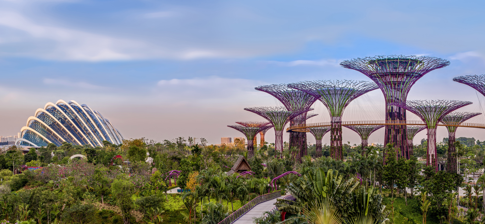
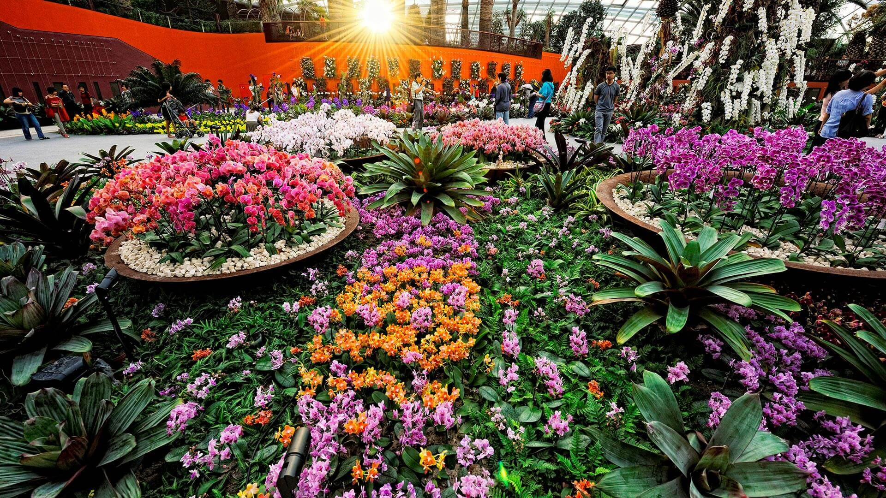
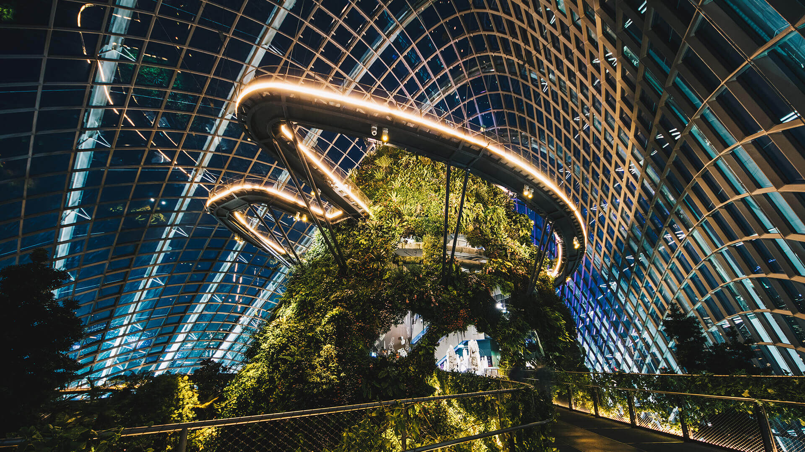
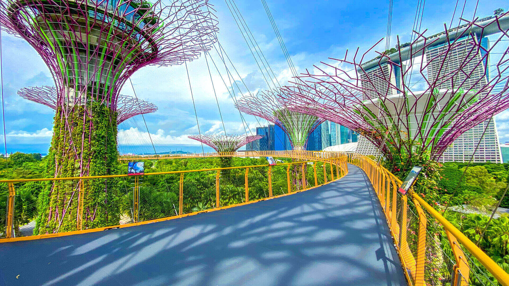
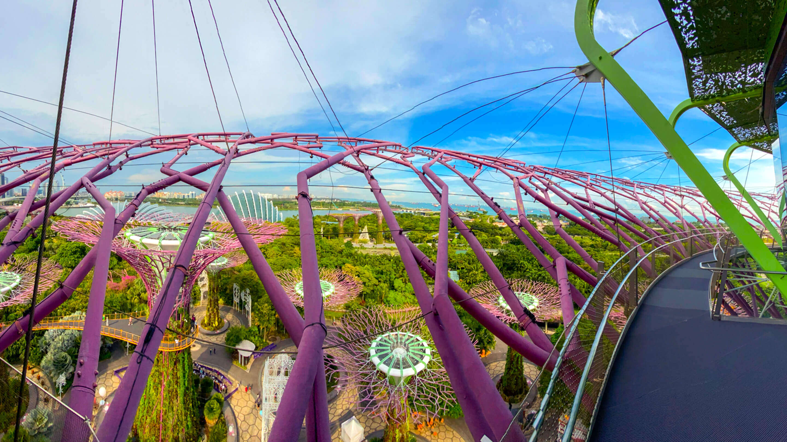

Gardens by the Bay

About Us
Gardens by the Bay is an independent organisation responsible for developing and managing one of Asia’s foremost garden destinations.
The Gardens is led by a multidisciplinary team of professionals who have been involved in the greening of Singapore and had worked alongside international and local experts to develop the Gardens. It has an in-house team of skilled landscape designers, horticulturists, arborists, engineers, plant health, garden and turf management experts, as well as plant research and orchid breeding professionals, who leverage on the extensive global network of plant sources cultivated during the development days, to continuously curate and grow the Gardens.
Highlights
A season of Floral Delights with Sakura featuring tokidoki
Opening Hours: Fri, 4 Mar 2022 - Sun, 3 Apr 2022
Admission Ticket: Admission charge to Flower Dome applies
Location: Flower Dome
Fubuki, Ichiyo, Haru & Harumi, Yoshino and Sakurako – tokidoki’s five magical Unicornos – join the ever-popular characters SANDy and Donutella in making their debut at this year’s Sakura floral display. Spot the colourful tokidoki characters in a landscape featuring torii gates, hanami settings, Japanese floral art by Ikebana International Singapore, and a display of Japanese carp streamers known as koinobori on loan from the Japanese Association, Singapore. Take in the ephemeral beauty of cherry blossoms as you explore a magical giant box with marumado, or traditional round Japanese windows with a view.
Back to Home
Attractions
Flower Dome

Get up-close with unusual plants native to a range of unique habitats – from the Mediterranean region, to South African savannahs and arid deserts!
Be awed by the Flower Dome’s beauty and its sheer size — this cavernous cooled conservatory holds the Guinness World Record for the largest glass greenhouse! Come explore and learn more about this innovative megastructure that literally brings the world’s flora under one roof.
Did You Know?
The Flower Dome's volume is equivalent to 75 Olympic-sized swimming pools
The Flower Dome is covered with 3,332 glass panels
Temperature in the Flower Dome ranges from 23°C to 25°C
The Flower Field Hall accommodates up to 1,000 people
Cloud Forest

Home to one of the world’s tallest indoor waterfalls and a lush mountain clad with plants from around the world, Cloud Forest rewards the curious and adventurous. Go on a fascinating journey of discovery and get up close with some of the world’s most exotic plant species as you stroll along its unique aerial walkways.
Make your way to the mountain’s peak. Take a closer look at unusual vegetation native to cloud forest habitats, typically found at some 2,000 metres above sea level. Look out for carnivorous plants such as pitcher plants and Venus Flytraps set against a verdant carpet of delicate ferns and mosses — all while enjoying spectacular views of the Marina Bay waterfront.
Did You Know?
It is as large as 1.5 regular football field
It features a 35m-tall indoor waterfall
Temperature in the Flower Dome ranges from 23°C to 25°C
Cloud forest has a humidity of 80% - 90%
Floral Fantasy
A stone’s throw from Bayfront MRT station, Floral Fantasy offers a magical escape among suspended bouquets and creative floral arrangements. Here, explore diverse garden landscapes that segue into each other through a meandering space. Along the way, stop by a vivarium populated by tiny poison dart frogs in a gamut of stunning hues!
Make your way to the mountain’s peak. Take a closer look at unusual vegetation native to cloud forest habitats, typically found at some 2,000 metres above sea level. Look out for carnivorous plants such as pitcher plants and Venus Flytraps set against a verdant carpet of delicate ferns and mosses — all while enjoying spectacular views of the Marina Bay waterfront.
Did You Know?
Floral Fantasy is 1,500 square metres big
Temperature in the Flower Dome ranges from 23°C to 25°C
Overhanging from the ceiling is a mix of over 15,000 fresh cut, dried and preserved blooms
OCBC Skyway

Enjoy the most enthralling views on the OCBC Skyway. Suspended between two Supertrees at 22 metres above ground, this 128m-long aerial walkway offers marvellous opportunities to capture that postcard-worthy shot of the Gardens’ lush surrounds, set in the heart of downtown Marina Bay.
Garden Rhapsody - Be dazzled by the magnificent sight of our Supertrees coming alive! Immerse yourself in this spectacular light and sound show happening twice nightly at 7.45pm and 8.45pm!
Supertree Observatory

Get your cameras ready! Located at the tallest Supertree’s canopy, the Supertree Observatory offers unparalleled views of Gardens by the Bay’s lush surrounds and the Marina Bay area. Enjoy refreshments, an immersive digital learning experience, endless photo opportunities, and an unforgettable time at the Gardens’ highest point!
Garden Rhapsody - Be dazzled by the magnificent sight of our Supertrees coming alive! Immerse yourself in this spectacular light and sound show happening twice nightly at 7.45pm and 8.45pm!
Did You Know?
The tallest Supertree is about the height of a 16-storey building
The Supertrees are sustainable vertical gardens housing over 162,900 plants of over 200 species
The nightly Garden Rhapsody shows are powered by 68 independent audio speakers
7 of the Supertrees are designed to harvest solar energy
Back to top of section (Attractions)
Back to Home
Plan Your Visit
Opening Hours
| Attraction |
Opening Hours |
Flower Dome
Cloud Forest
OCBC Skyway |
9.00am-9.00pm (last admission at 8.30pm) |
| Floral Fantasy |
Mon-Fri: 10.00am - 7.00pm (last admission at 6.30pm)
Sat, Sun, PH: 10.00am - 8.00pm (last admission at 7.30pm) |
| Supertree Observatory |
Mon-Fri: 4.00pm - 9.00pm (last admission at 8.30pm)
Sat, Sun, PH: 12.00pm - 9.00pm (last admission at 8.30pm) |
Tickets
Click here
to book tickets!
| Attraction |
Ticket Type |
Singapore Resident |
Non-Resident |
| Flower Dome OR Cloud Forest |
Adult |
$12 |
$20 |
| Child |
$8 |
$12 |
| Senior Citizen (above 65 yrs) |
$9 |
- |
| Flower Dome + Cloud Forest |
Adult |
$20 |
$28 |
| Child |
$12 |
$15 |
| Senior Citizen (above 65 yrs) |
$15 |
- |
| Floral Fantasy |
Adult |
$10 |
$20 |
| Child |
$5 |
$12 |
| OCBC Skyway |
Adult |
$8 |
| Child |
$5 |
-
This list of prices is non-exhaustive. For a more detailed look at all prices inclusive of promotions and bundles, please click on the link provided above.
-
Singapore Resident rates apply to Singapore Citizens, Permanent Residents, as well as those living in Singapore, including Employment Pass, Work Permit and Dependent Pass holders.
-
Proof of residency may be required at the point of ticket purchase and / or admission. In the event proof of residency is not able to be produced, ticket upgrades will be required.
- All stated prices are in Singapore dollars (SGD) and inclusive of GST.
Getting Here
Address: 18 Marina Gardens Drive, Singapore 018953
Click here
to access Google Maps
Click here
for a more comprehensive guide to get here
See you at the Gardens!

Back to top of section (Plan Your Visit)
Back to Home
General Enquiry Hotline
Tel: +65 6420 6848
9.00am - 9.00pm daily
Email:feedback@gardnesbytheaby.com.sg
Back to Home